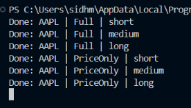

ML
Python
Python AI Stock Analysis
A machine learning model that scores a stock's potential from multiple criteria. In parallel, writing up a research paper on SVR vs. RF model effectiveness on volatile, noisy datasets — see Research.
Completed